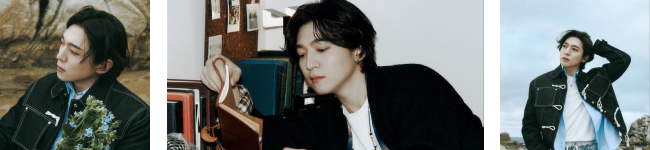
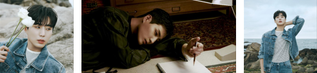
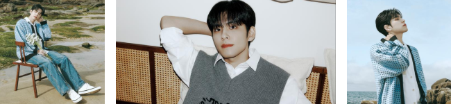
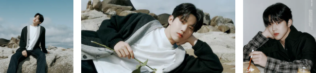

member
SUNGIN
박성진 (朴晟鎭, Park Sungjin)
생년월일 : 1993년 1월 16일(31세)
출생지 :대한민국 부산광역시 사하구
day6에서 리더이자 일렉기타를 맡고 있으며 긁는 듯 허스키한 보이스가 특징이며 생년월일 : 1993년 1월 16일(31세)
출생지 :대한민국 부산광역시 사하구
작사/작곡 스타일을 알 수 있는 대표곡은 <겨울이 간다>, <포장>, <Afraid>이 있다.
유튜브 채널 “박성찐이야”를 개설하여 팬들과 소통을 이어나가고 있다.

YOUNG K
강영현 (姜永晛, Kang Younghyun)
생년월일 : 1993년 12월 19일(30세)
출생지 : 서울특별시
day6에서 베이스와 보컬, 랩을 맡고 있다. 생년월일 : 1993년 12월 19일(30세)
출생지 : 서울특별시
넓은 음역대와 안정적인 발성을 갖고있으며 특유 소울풀한 보이스를 갖고 있다.
작사/작곡 스타일을 알 수 있는 대표곡은 <어떻게 말해>, <love me or leave me>이며
데이식스 멤버 중 개인활동을 가장 많이 하는데
주로 라디오 dj, 프로그램 게스트, mc, 드라마 예능 등에 데이식스를 대표하여 출현한다.

WONPIL
김원필 (金元弼, Kim Wonpil)
생년월일 : 1994년 4월 28일(30세)
출생지 :인천직할시 북구 삼산동
day6에서 키보드/신디사이저를 맡고 있으며 독특한 음색을 보유하고 있으며 생년월일 : 1994년 4월 28일(30세)
출생지 :인천직할시 북구 삼산동
작사/작곡 스타일을 알 수 있는 대표적인 세 곡은 <노력해볼게요>, <예뻤어>이다.
데이식스 활동 이외에도 뮤지컬, 드라마, 라디오 등 다양한 영역에서 활동하고 있다.

DOWOON
윤도운 (尹度云, Yoon Do-woon)
생년월일 : 1995년 8월 25일(28세)
출생지 : 서울특별시
day6에서 드럼을 맡고 있다. 생년월일 : 1995년 8월 25일(28세)
출생지 : 서울특별시
드럼 스타일을 알 수 있는 대표곡은 <반드시 웃는다>, <hunt>가 있으며
보컬을 맡고 있진 않지만 가끔 킬링파트 한 소절을 부르곤 한다.
유튜브 채널 “도운이를 도운이”를 개설하여 팬들과 소통을 이어나가고 있다.
